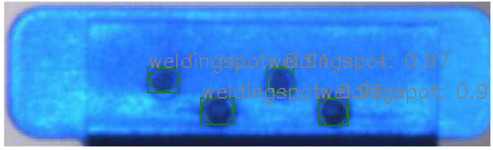
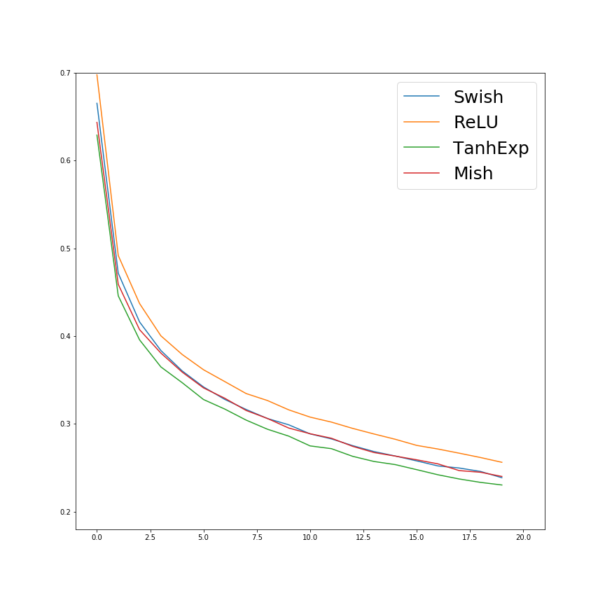

Link
Research
Real Time Instance Segmentation Method For Industrial Welding Spots
In real industrial manufacturing scenarios, computer vision inspection algorithms is usually utilized for recognizing the locations and shapes of the laser welding spots. Meanwhile, it is also essential to detect the defects of these spots. In order to realize a fully automated detection pipeline, we proposed an anchor-free instance segmentation method and implemented on our labelled dataset. Our method can not only classify and locate the welding spots accurately, but also record the amount of instances in each image. More experiments are being taken, and a manuscript is in preparation.

 |
The pictures plot the segmented results under the proposed algorithms in [1] (back tab and front tab, respectively).
Related Publications:
[1] X. Liu, and X. Di, “An Anchor-free Instance Segmentation Pipeline For Industrial Welding Spots,” 2020. In preparation.
Related Code:
Developing A Novel Activation Function For Image Classification
With the development of Deep Neural Networks, researchers tend to find out the most effective method of realizing the non-linearity, thus an exploration of activation function is continuously in process. In this work, we present a novel simple yet effective activation function named Tanh Exponential Activation Function(TanhExp). TanhExp is a smooth function that is not piecewise. It is continuous, unbounded above and bounded below, with a minimum value of -0.3533. The positive half is approximately linear, which ensures the network preserves the distribution of original data to some extent. Besides, TanhExp requires less computation than other smooth functions and does not need any hyper-parameters, which has little effect on the size and training speed of the network. TanhExp is also easy to implement, with just a few modifications to each model. We demonstrate the simplicity and effectiveness of TanhExp on various datasets and network models and TanhExp outperforms its counterparts in both accuracy and convergence speed, especially on light networks. For instance, on a 15-layer neural network, the test accuracy of TanhExp at the first epoch is 36% higher than Mish and 123% higher than Swish. We believe that TanhExp will definitely benefit researchers on many tasks.
 |
 |
The pictures plot the accuracy and loss in Fasion Mnist of our proposed activation function in [1].
Related Publications:
[1] X. Liu, and X. Di, “TanhExp: A Smooth Activation Function with High Convergence Speed,” Submitted, 2019.
Enhance Semantic Segmentation Results Through Merging Multi-Scale Features
Current semantic segmentation methods are always suffering from the dilemma between classification and localization and the effectiveness of utilizing a classification architecture as a network backbone. We propose a Multi-Scale Recurrent Network (MSRNet) which aims at alleviating the above issues. Specifically, we propose Spatial Pyramid Recurrent module (SPR) to capture classification and localization features simultaneously based on spatial pyramid structure, in which ConvLSTM is used for extracting the relations we discovered among multi-scale feature maps. We also propose a Feature Fusion module to fuse the features between large and small feature maps through attention mechanism. Besides, we apply Semantic Classification Loss into SPR module in order to force the smallest feature map to concentrate on classification and avoid the impact of a variety of sizes of objects. Finally, we demonstrate the validity and flexibility of MSRNet and Deeplab v3+ added with our proposed modules on Pascal VOC 2012 dataset, which shows a significant improvement in both accuracy and mean IOU.
The pictures represent the ground truth and our results in [1].
Related Publications:
[1] H. Zhang, X. Di and X. Liu, “Merging Multi-Scale Features through Recurrent Neural Network for Semantic Segmentation,” Submitted, 2019.